A step-by-step guide for store owners. Make your catalog discoverable to AI shopping assistants and AI search engines (ChatGPT, Gemini, Claude, Perplexity, Copilot, Google AI Overviews) without giving up checkout, customer data, or your payment processor.
Status: Beta. The plugin is in active development. Features and shape may change between releases. Production use is supported; your feedback shapes what ships in 1.0.
Plan for 15 minutes. You'll have AI Storefront installed, configured, and verified live by the end.
AI tools are changing how shoppers find products. Some assistants help a shopper browse, compare, and check out with the shopper present, handing them off to the merchant's checkout when they're ready to buy. Some can also act on a shopper's behalf. Some AI search engines (Google AI Overviews, Perplexity, ChatGPT search) answer product questions by citing real stores. Some chat tools just need a quick orientation to talk about your business accurately. To be visible to all of these, your store needs to publish information in the formats AI tools read.
This plugin makes your store speak three of those formats at the same time, all automatic once you turn it on:
A structured product feed and checkout handoff for AI shopping assistants. AI assistants, whether they're co-shopping with the buyer in chat or acting on the buyer's behalf, can browse your catalog, check inventory and prices, and send the buyer straight to your checkout with the right items in cart. The assistant handles the shopping conversation; your WooCommerce store handles the transaction. This piece uses a protocol called UCP (Universal Commerce Protocol).
Enhanced structured data on every product page for AI search engines. Search engines and AI answer engines look for machine-readable details on product pages: price, availability, shipping windows, return policy. The plugin adds these in the modern JSON-LD format (the same standard Google uses for rich snippets, extended for AI). This is the heart of "GEO" (Generative Engine Optimization): showing up accurately when an AI engine answers a shopper's question about products like yours.
A plain-language store summary at /llms.txt. Any AI tool that wants quick context on your business can read this short text guide. It describes what you sell, your categories, and how to link to products. Think of it as a robots.txt for the AI era.
You can think of these as three doors into the same store: agents that close the sale walk through door 1, search engines that cite you walk through door 2, conversational tools that talk about you walk through door 3. You don't need to choose; the plugin opens all three.
You do not need an AI account, an API key, or a developer.
A few things this plugin is intentionally not, so you can decide if it fits your goal:
It is not a product feed for Google Shopping, Bing Shopping, Microsoft/Copilot Commerce, or Meta Catalog. Those platforms ingest catalogs you submit through their merchant centers (Google Merchant Center, Bing Webmaster, Meta Commerce Manager). This plugin works the opposite way: it publishes open discovery surfaces on your own site that AI agents read directly. The two are complementary and stacked: GMC feeds the retrieval layer (which products Google's AI surfaces consider), this plugin feeds the checkout-handoff layer (how AI agents send the shopper through to your store). Keep GMC if you have it; this plugin adds the layer GMC doesn't address. See §1.2 below.
It is not for in-chat agentic checkout (sometimes called "delegated payments" or ACP-style flows). Protocols like Stripe ACP or Google's emerging Agentic Commerce APIs hand the agent a payment token and have it complete the transaction inside the chat surface, sometimes without the shopper present. UCP, what this plugin speaks, explicitly does the opposite: the agent hands the shopper off to your checkout, where the shopper (or, in the on-behalf-of case, the agent acting under their authorization) completes the purchase using your existing payment provider. If your business model requires headless agent purchasing without a shopper-checkout step, this plugin alone won't deliver that.
It is not an AI chatbot for your store. There's no chat widget, no conversational UI, no "ask our store assistant" surface added to your site. The plugin makes your catalog legible to external AI tools (ChatGPT, Gemini, Claude, etc.); it doesn't bring an AI tool into your store.
It does not write or improve product copy. No descriptions are generated, rewritten, or summarized. The plugin reads what you've already authored in WooCommerce and republishes it in machine-readable formats. Better-authored products yield better AI responses, but that's an upstream merchandising task, not something the plugin does for you.
You'll need:
manage_woocommerce).You don't need an AI account, an API key, or a developer.
You'll get the most value if your store is direct-to-consumer, publicly accessible, and lists products with clear titles, prices, descriptions, and images.
You may want to wait if any of these apply:
Works alongside Google Merchant Center — and stacks with it. Since January 2026, Google's Gemini agentic shopping uses two layers: the Shopping Graph (product retrieval, populated by GMC feeds and product-page Schema.org markup) and UCP (the agentic checkout handoff, the protocol Google and Shopify jointly launched). If you push to GMC, you feed the retrieval layer. If you publish via this plugin, you feed the checkout-handoff layer. You want both: GMC alone gets your products into Gemini's index, but doesn't tell Gemini how to hand the shopper off to your checkout; UCP alone doesn't help if the agent can't discover your products to begin with. Together they form the path from "shopper asks Gemini" to "shopper checks out on your store." The enhanced JSON-LD on product pages also reads as legitimate Schema.org structured data to both Google and AI agents. Orders attributed to GMC appear in GMC's dashboard; orders attributed to AI agents appear in this plugin's Overview tab.
Plugins worth checking before you enable:
/robots.txt and confirm AI crawler rules are present.When your store uses WooPayments' multi-currency feature, the AI Storefront plugin honors every per-currency setting the merchant configures:
-0.01 / -0.05 offsets are applied to converted prices, so what the agent quotes matches what the buyer sees on the storefront.No additional configuration is required. AI agents that send context.currency: EUR in their UCP requests receive prices, search-result filter bounds, and checkout expected_unit_price comparisons all in EUR. When an agent requests a currency the store does not accept, prices fall back to the store base and the response carries a clear currency_conversion_unsupported warning.
woocommerce-ai-storefront.zip and click Install Now.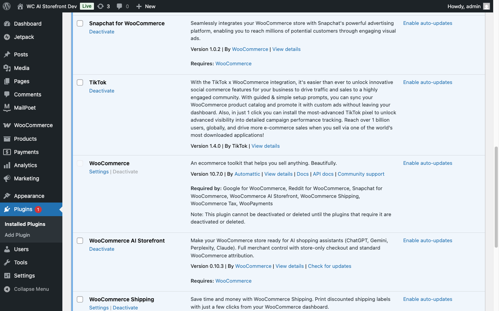
A new menu item appears under WooCommerce → AI Storefront in the sidebar. The plugin's row on the Plugins screen also gets a Settings link that jumps straight there.
The plugin installs in paused mode. Nothing publishes until you turn it on.
Go to WooCommerce → AI Storefront. The page opens with a hero screen showing the headline "List once. Sell everywhere AI shops.", four AI agent chips (ChatGPT, Gemini, Perplexity, Copilot), and the Enable AI Storefront button.
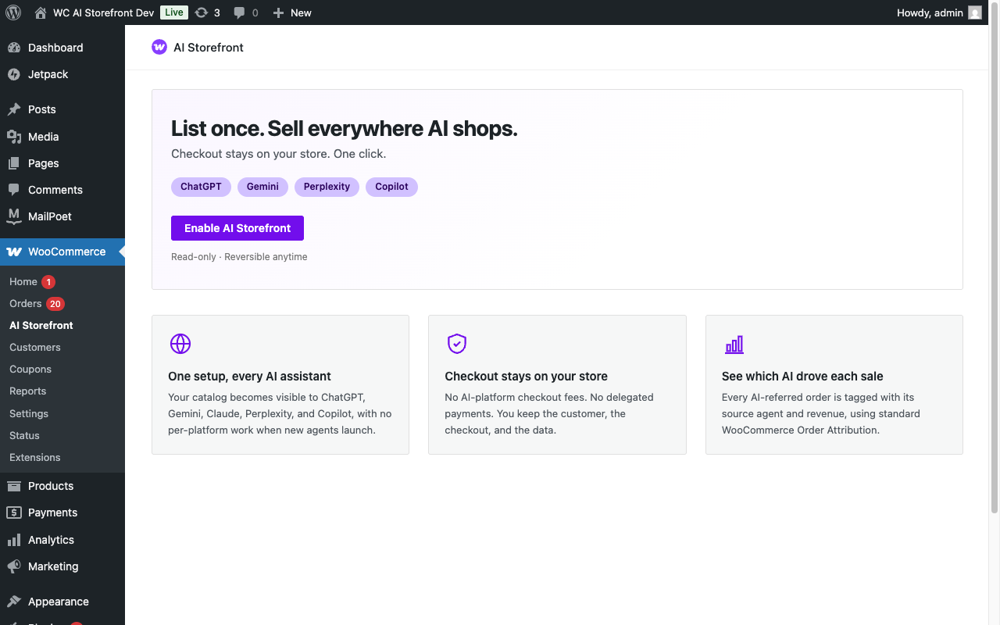
Click Enable AI Storefront. The hero is replaced by the section nav (Overview, Visibility, Policies, Discovery) and the plugin goes live.
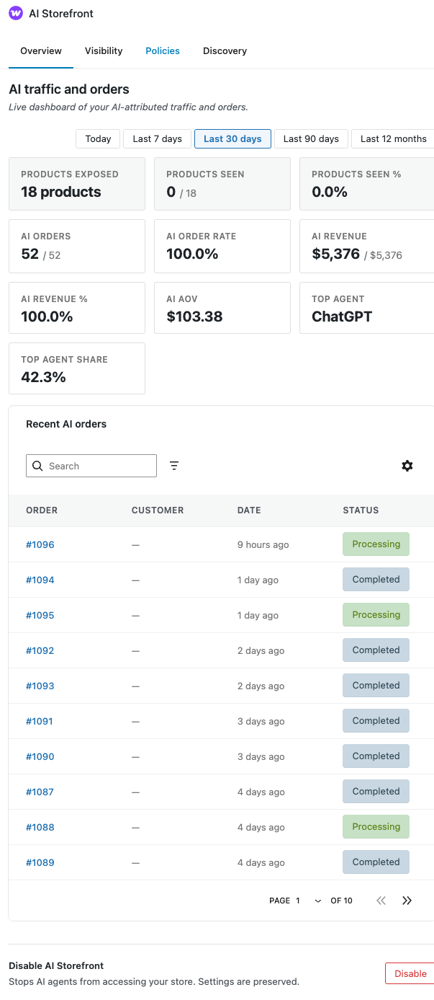
Enabling does five things:
/llms.txt (visible to AI agents), and advertises it to AI tools two ways shoppers never see: an HTTP response header and a hidden link in each page's <head>./.well-known/ucp (visible to AI agents).To pause, click Disable AI Storefront at the bottom of the page. AI agents will no longer be able to see your catalog endpoints, but existing order tracking remains in place.
The Overview tab populates with stat cards once data flows in:
N / M where M is the total products exposed.N / M where M is your total store orders for context.$X / $Y where Y is total store revenue in the period.X% / Y% where X is Agent and Y is Referral. The split tells you whether AI is selling for you (Agent dominant) or referring for you (Referral dominant), which usually points to different growth investments. Diagnostic use: a near-zero Agent share when you're confident an agent like Gemini is sending traffic typically means the agent isn't discovering your UCP manifest, and is deep-linking from your Schema.org product markup instead. Re-check that /.well-known/ucp is reachable from outside your network (Layer 1 of the verification in §4).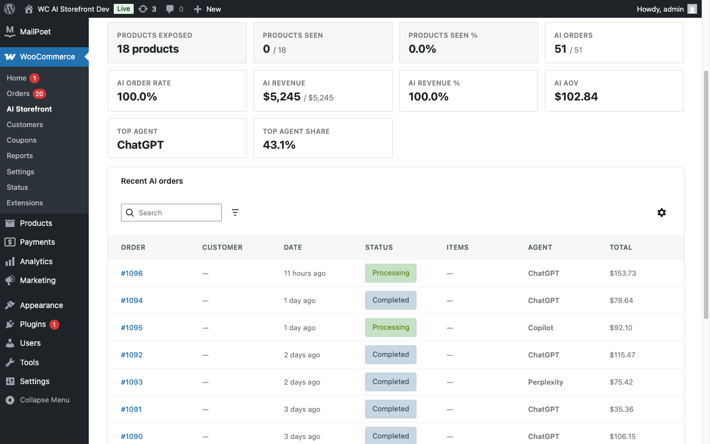
A date-range strip above the stat cards lets you pick the window: Today, Last 7 days, Last 30 days, Last 90 days, Last 12 months. Each is a trailing window from the moment you click; the labels match the underlying behavior (a "Last 12 months" click means the last 365 days, not the previous calendar year).
Stats are blank on day one. First AI traffic typically lands within a few days; meaningful aggregate volume takes weeks.
Before configuring anything else, take 30 seconds to confirm the endpoints are live.
| URL | What you should see |
|---|---|
https://your-store.com/llms.txt |
A plain-text Markdown document starting with # Your Store Name, with sections covering store identity (## Store), browse/search URLs (## Browse), top categories (## Catalog), shipping and returns (## Shipping & Returns), structured-data signposts, and agent-facing endpoints (## For agents). |
https://your-store.com/.well-known/ucp |
A pretty-printed JSON document in monospace. Top-level keys: name, version, capabilities, payment_handlers, services. |
https://your-store.com/robots.txt |
The standard WordPress robots.txt plus a block of User-agent: GPTBot / User-agent: ChatGPT-User / etc. each with Allow: lines. |
https://your-store.com/opensearch.xml |
A small XML document starting with <OpenSearchDescription>. It tells AI agents and browsers how to search your products, pointing at both your product-search page and the catalog API. |
| Homepage → "View page source" | Search for "@type":"OnlineStore". This is your store's brand info available to AI shopping agents. See section 4b. |
| Any product page → "View page source" | Search for "@type":"Product". You should see product details like prices and (once you set one in section 7) return policy information. |
The Discovery tab shows the same URLs as clickable links with reachability dots. URLs render in monospace font:
If something returns 404 or shows your homepage, jump to Troubleshooting.
While the plugin is enabled, /llms.txt is advertised to AI tools in two ways shoppers never see: an HTTP response header on every page and a hidden <link rel="alternate" type="text/markdown"> in each page's <head>. These give header-inspecting clients and HTML crawlers a way in: once they open /llms.txt it points them to all of your other endpoints. Nothing visible is added to your pages, so don't expect to see a link on the page itself.
Verify your setup in three layers, most reliable first. AI engines are non-deterministic — a single chat query is not a reliable signal of whether your store is correctly published. Use layered verification to separate "is the plugin working" from "did the AI engine cooperate."
Layer 1 — Direct endpoint check (deterministic). Visit /llms.txt and /.well-known/ucp on your store in a browser. If they return your store identity and protocol manifest, the plugin is working server-side, regardless of how AI engines behave. This is the load-bearing check.
Layer 2 — Independent validation tools (recommended). Run your domain through UCPPlayground or UCPChecker. They fetch your endpoints directly and report what they see, with no AI-side caching or fetch-versus-fabricate variability. See section 4a.
Layer 3 — Live AI assistant query (variable results). Ask an assistant with live web browsing:
"Find products at [your-store.com] that match [some attribute, e.g. 'red running shoes under $100']."
Expect different behavior across engines:
"Did you actually fetch [your-store.com]?" to surface this.If layers 1 and 2 succeed but layer 3 hallucinates or comes up empty, your store is correctly publishing. The AI engine hasn't fetched, or has cached an older fetch. Wait a few hours or try a different engine. Don't treat layer 3 alone as authoritative.
Natural-language search queries match against your product categories, tags, brands, and attributes, not just product titles. So an agent asking for "hoodies" will find products in your "Hoodies" category even if the individual product titles use a different word, and "watches" will find products in a "Watch" category. Plural and singular forms are handled automatically.
The plugin's UI shows you what the plugin THINKS it's publishing. For an independent view of what an AI agent or the UCP protocol layer actually sees, three widely-used community tools can help. They're independent of Automattic and this plugin, but maintained by people active in the UCP ecosystem (UCPPlayground's creator sits on the UCP.DEV technical council).
| Tool | What it answers | When to use |
|---|---|---|
| UCPPlayground.com (Agent + Playground modes) | What does an AI shopping agent see when it walks your catalog and checkout? | End-to-end testing. Catches product-data issues (missing prices, unpurchasable variants, broken images) before real agents do. |
| UCPChecker | Is your UCP manifest and catalog spec-conformant? | Protocol validation. Catches shape drift after a plugin upgrade or after touching extension filters. |
| UCP Registry (optional) | A directory of UCP-enabled stores. How widely AI agents query it varies. | Submission costs nothing. Treat as opt-in rather than required. |
These tools are not officially affiliated with Automattic. URLs and capabilities may change over time. If any link is dead, the UCP spec page at https://ucp.dev/ will usually point at the current validator or playground.
Your homepage now publishes your store's brand details (name, logo, address, contact) in a format that AI agents understand. AI shopping assistants use this info to confirm they're recommending the right store.
If your homepage is your shop page (the default WooCommerce layout where the storefront lists products on the root URL), the homepage also publishes the same product list (titles, prices, availability) that /shop/ does, so an agent that fetches only your root URL still sees products and prices, not just brand info. If your homepage is a separate landing page, only the brand details above are published there.
| Field | Source | Notes |
|---|---|---|
| Store name, description, URL | WordPress Site Settings | Edit at Settings → General. |
| Currency | WooCommerce setting | Edit at WooCommerce → Settings → General. |
| Logo | Site logo or icon | Edit at Appearance → Customize → Site Identity. Used if set. |
| Address | Store location | Edit at WooCommerce → Settings → General. Shows city, state, zip, country only. |
| Your WooCommerce email | See Customer service email below. | |
| Search | Auto-generated | Lets AI agents search your store. Advertised on every page (not just the homepage) and via the /opensearch.xml descriptor, so agents can find your search no matter where they land. |
| Categories | Auto-generated | A summary of your main product types. |
| Return policy | Your plugin settings | Edit at WooCommerce → Settings → AI Storefront → Policies. See section 7. Published only when you've set a policy other than "Not configured". |
| Specialties | Auto-generated | A short list of what your store specializes in, derived from your top product categories. |
About the address. Only your city, state, zip, and country are published to AI agents. Your street address is intentionally hidden for privacy and safety. If you use your home address for tax purposes, it stays private.
Customer service email. The plugin uses your WooCommerce email settings in this order:
The plugin never publishes your WordPress admin email as a public contact. If neither address works, the email contact is omitted entirely.
Phone and social profiles are not published by this plugin. If you want to add them, other plugins (like Jetpack or Yoast) can help with that.
The Visibility tab controls what AI agents can see. Three modes:
| Mode | What AI agents see | Use when |
|---|---|---|
| All published products | Everything currently published | Default. Use unless you have a reason to scope. |
| Products by category, tag, or brand | Only products in the selected taxonomies | You want to expose evergreen lines but exclude clearance, NSFW, or out-of-region products. |
| Specific products only | Only products you pick individually (with typeahead search) | Curated launches, B2B-restricted SKUs, limited drops. |
Steps:
product_brand taxonomy registered (typically via WooCommerce Brands or a similar plugin); without one, you'll see only Categories and Tags. Taxonomies with 20+ terms have a search bar. Checkboxes render in a 2-column grid. The product-count pill updates live.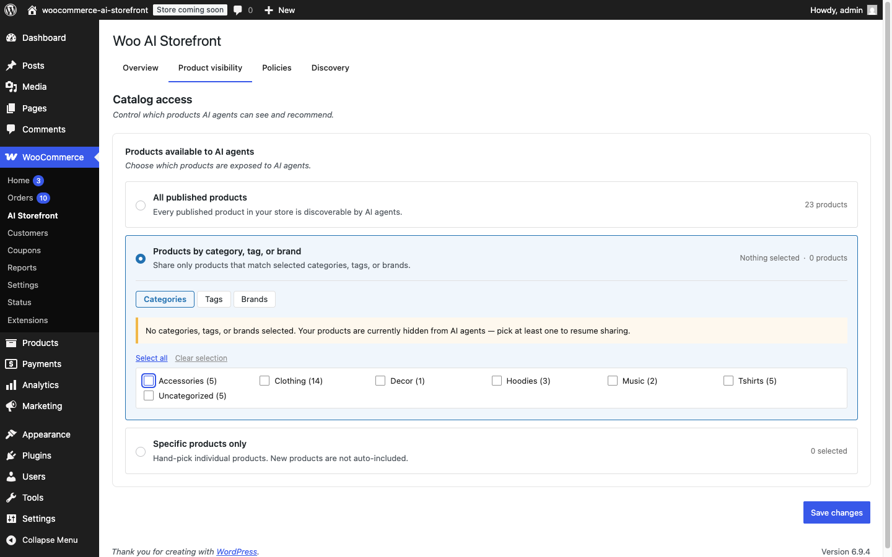
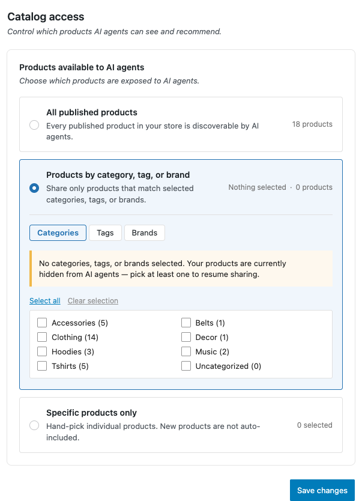
Visibility settings apply everywhere: your store guide, your catalog endpoints, and product details. Excluded products won't show up when AI agents search your catalog.
The Catalog access card shows the total product count and the count exposed to AI agents. Visibility settings are enforced on the selection mode you choose.
Note. Visibility settings only affect AI-agent-facing surfaces. The Shop page, search, and category archives keep working exactly as before for regular shoppers.
Beyond which products you expose, the shape of your product taxonomy is the single biggest lever for how well AI shopping agents and search engines understand your store. The plugin publishes whatever taxonomy you give WooCommerce: clean structure goes in, clean structure goes out.
This section is a pragmatic playbook. Allow 30–60 minutes for a small catalog (<50 products); a few hours for a larger one.
When an AI agent answers "where can I buy a heavyweight cotton tee?", it does three things in sequence:
Steps 2 and 3 lean heavily on category labels. If your tees sit in a category called "Summer Vibes", an agent matching against "tees" may miss them entirely, or surface them with a confusing context line. If your tees sit in a category called "Tops > Tees", an agent immediately knows what they are, what they're a subset of, and how to compare them to competing products.
The same goes for Google AI Overviews and Merchant Center: Google increasingly maps merchant categories onto its own Google Product Taxonomy (a public hierarchy of ~5,500 standardized product types). Categories that align cleanly with that taxonomy show up better in shopping surfaces. Categories that don't (marketing-driven names, audience-driven names, seasonal labels) are guessed at or skipped.
1. Name categories for what the product is, not who it's for or when it's sold.
| Less effective | More effective |
|---|---|
| Summer Vibes | Tees, Swimwear |
| Dad's Picks | Watches, Wallets |
| Best Sellers | (use a tag, not a category) |
| New Arrivals | (use a tag, not a category) |
| Holiday 2026 | (use a tag or product feature image, not a category) |
Marketing/seasonal/audience labels are useful for store navigation; keep them as tags or product attributes. They're a poor primary taxonomy because they tell an AI agent nothing about what the product is.
2. Use a shallow hierarchy: 2 levels is usually enough.
A two-level tree (parent → leaf) is enough for most small and mid-sized catalogs. Three levels is acceptable when a parent genuinely has many distinct subtypes (e.g. Apparel > Tops > Tees). Going deeper than that with one product per leaf does more harm than good: the navigation becomes brittle and the data sparse.
3. Every product should sit in a leaf, not a parent.
If you have Accessories > Hats, no product should be filed under bare Accessories. Parents are for navigation; leaves carry the taxonomy. A product directly assigned to Accessories is effectively saying "this is an accessory, but we don't know what kind", which is exactly what you don't want AI agents to read.
4. Align category names with Google Product Taxonomy where possible.
Google publishes a free, public list at google.com/basepages/producttype/taxonomy-with-ids.en-US.txt. It's the canonical reference for shopping surfaces (Google Merchant Center, Google AI Overviews, Gemini shopping, and many AI shopping agents that piggyback on Google's structure).
You don't need to be Google's taxonomy. Most stores use their own names for branding reasons. But you do want your categories to map cleanly to Google nodes. A few wins from matching Google's terminology where it's unobtrusive:
| Your category | Closer to Google's path | GPT ID |
|---|---|---|
Hoodies |
Hoodies & Sweatshirts |
5697 |
Coats, Jackets (separate) |
Coats & Jackets (one) |
5598 |
Sunglasses |
Sunglasses (under Eyewear) |
178 |
Notebooks |
Notebooks & Notepads |
2419 |
Pragmatically: pick names a shopper would recognize, and where Google's name is also recognizable, use Google's. Where Google's name is awkward ("Apparel & Accessories > Clothing > Shirts & Tops"), use your own and just keep it short and unambiguous.
5. Tell Google what you mean: set Google Product Category per category.
If you have an SEO or product-feed plugin installed (Yoast SEO, RankMath, Google Listings & Ads, Facebook for WooCommerce), it likely exposes a "Google Product Category" field on each product category. Setting it once per category lets every product inside inherit the correct mapping, and lets Google Merchant Center and shopping agents read your catalog without guessing. AI Storefront does not surface this field itself today, but the moment any of those plugins set it, the data is on the term where future AI Storefront versions can read it.
Here is the shape of a small apparel store before and after a 30-minute reshape. The before column is what merchants commonly end up with after a year of organic growth; the after column is a clean two-level hierarchy that maps cleanly to Google Product Taxonomy.
Before (organic growth):
- Tees (10 products) → "tees", fine
- Shirts (4 products) → "shirts", fine
- Hoodies (5 products) → "hoodies", close to Google's "Hoodies & Sweatshirts"
- Knits (1 product) → too few products to justify own category
- Outerwear (3 products) → mix of jackets and BOOTS; boots aren't outerwear
- Accessories (13 products) → bucket of hats, bags, sunglasses, socks, belts,
a notebook, AND a gift card; nothing in common
- Capsule (4 products) → subscription drop; merchandising, not taxonomy
- Jackets (0 products) → aspirational, empty
- Bottoms (0 products) → aspirational, empty
After (30 minutes of reshape):
- Tops (parent, 0 products, for navigation only)
- Tees (10 products)
- Shirts (4 products)
- Knits (1 product)
- Activewear (parent)
- Hoodies & Sweatshirts (5 products) → matches Google name
- Outerwear (parent)
- Coats & Jackets (1 product) → matches Google name
- Footwear (parent)
- Boots (2 products) → moved out of Outerwear
- Accessories (parent)
- Hats (4 products)
- Bags (1 product)
- Eyewear (1 product)
- Belts (1 product)
- Socks (1 product)
- Neckwear (2 products)
- Stationery (1 product) → notebook lives here,
not under apparel
- Gift Cards (1 product) → top-level, not under
Accessories
- Capsule (4 subscription products) ← kept as a
merchandising
category
Same products, same store, twenty minutes of work, and the resulting JSON-LD now carries category labels every AI agent and search engine recognizes. The Bottoms and empty Jackets were deleted; the bucket Accessories was preserved as a navigational parent but every product was moved to a real leaf inside it.
Step-by-step, from the WooCommerce admin:
Audit what you have. Open Products → Categories. Note the product count next to each. Empty or near-empty categories are candidates for deletion or merging. Categories with mixed product types (e.g. "Accessories" containing both apparel items and gift cards) are candidates for splitting.
Sketch the target tree on paper or in a doc. Two levels max. Each leaf should have at least 2–3 products, ideally more. If a category has 1 product and isn't growing, fold it into its parent.
Create new categories before reassigning products. From Products → Categories: add the new parents first, then the new leaves with the parent set. This way, when you reassign products, the destination already exists.
Reassign products in bulk. From Products → All Products: use the Filter by category dropdown to find products in the old category, then bulk-edit their Categories field to move them. WooCommerce supports multi-category assignment; if a product genuinely belongs in two leaves (e.g. a hoodie that's also part of a kit), assign both.
Reassign one of each variation product. Variable products and grouped products keep their existing category assignment when you reassign; no special steps needed.
Delete old or now-empty categories last. Reassigning all products out of a category drops its count to 0; you can then delete it from Products → Categories without losing anything.
Set Google Product Category per category (if you have an SEO/feed plugin that supports it). Edit each category, find the Google Product Category dropdown, and select the closest Google node.
Verify the result. Visit a product page, view source, and find the <script type="application/ld+json"> block. The Product.category field should now show your new leaf name. The breadcrumb block should show the full path.
Some categories are genuinely merchandising, not taxonomic: "Capsule" (subscription drops), "Limited Edition", "Collab". These don't have a clean Google taxonomy equivalent and that's fine. Two options:
Keep them as categories and also assign each product to a physical-product leaf (e.g. a hoodie in the Capsule drop is also assigned to Activewear > Hoodies & Sweatshirts). AI Storefront picks the deepest leaf in the longest path when emitting Product.category, so the physical leaf wins, and the merchandising category remains for browse navigation.
Convert them to tags. Use Products → Tags to add a capsule tag, retag the products, and remove the category. Tags don't appear in JSON-LD Product.category so they don't pollute the canonical category.
Pick whichever preserves the navigation your shoppers expect. Either way, the AI-facing category stays clean.
Note on category-name search: AI Storefront does light synonym handling in agent search (singular/plural, common variants). It doesn't translate marketing names into product types. If your
Summer Vibescategory contains swimwear and an agent asks for swimwear, the agent will not find it unless the category is renamed or you also assign those products to aSwimwearcategory.
WooCommerce core ships a built-in MCP (Model Context Protocol) integration starting in WC 10.3.0, designed for admin-side AI: it lets AI assistants like Claude or ChatGPT, running under your own credentials, read and modify your store on your behalf from inside the admin. There is no extension to install: the integration is already on your store after you update WooCommerce, gated behind a feature flag you toggle on.
WooCommerce's MCP is a developer-preview feature, enabled per store. Once on, an MCP-aware assistant gets access to WooCommerce's product and order operations, including the ability to read your current product_cat taxonomy, propose a reshape against the principles above, and apply the changes after you approve.
This is genuinely useful for the kind of work this section describes: large catalogs (hundreds of categories), legacy stores with organic-growth taxonomies, or merchants who want a second opinion on which categories are taxonomic vs. merchandising.
Two important notes before enabling:
To enable it on your store:
mcp_integration feature flag, generating an API key, and connecting clients like Claude Code.product_cat taxonomy and propose changes.If your store is not on a host that supports the MCP setup, you can still apply the principles in this section manually via Products → Categories in WP-Admin, or scriptedly via WP-CLI (wp wc product_cat ...) or the WooCommerce REST API with an Application Password.
AI Storefront does not register its own MCP abilities yet. What WooCommerce's MCP exposes today (products, orders, and the WC Abilities API surface) is enough to do the catalog-shaping work in this section. AI Storefront-specific admin abilities (JSON-LD validation, taxonomy mapping audits, syndication-state queries) are on the plugin's roadmap and will become available once the WooCommerce MCP integration leaves developer preview. None of those would change what external shopping agents see; they'd only give your own AI assistants better tools for grooming the store.
The Discovery tab controls which AI crawlers can read your endpoints and how aggressively. All form input fields on this tab are 32px tall.
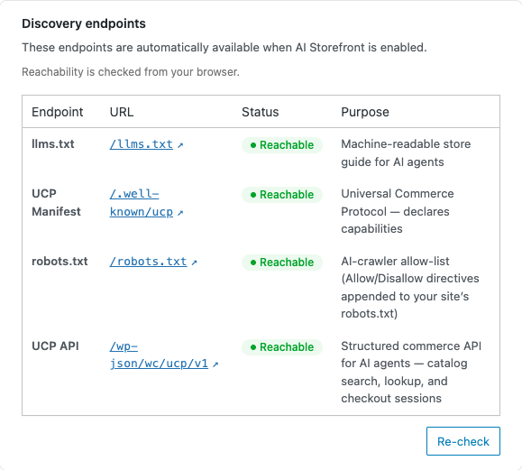
The crawler list groups 18+ AI bots into three collapsible sections, each with a count badge and chevron:
Unchecking tells that crawler to stop. Most legitimate AI crawlers will respect this; malicious bots typically ignore it anyway.
A toggle labeled Other AI agents controls whether unlisted crawlers can access your store. When checked, AI agents whose brand isn't in the list can access your store.
A toggle labeled Serve a Shopify-compatible /products.json catalog feed controls whether your store answers requests at /products.json (and the /collections/all/products.json alias). The same toggle also serves the scoped paths assistants drill into next: a single product at /products/{handle}.json, one category's products at /collections/{handle}/products.json, and your category list at /collections.json. It is on by default.
Here is why it helps. Many AI shopping assistants learned to read catalogs from Shopify stores, which publish their products as JSON at /products.json. When one of these assistants meets a store it doesn't recognize, the first thing it often tries is that same address. If your store answers in the format it expects, the assistant can read your whole catalog in one request and start recommending your products right away. If your store returns nothing, the assistant may move on.
This feed publishes the same products you already expose to AI agents (it respects your Visibility settings exactly like every other surface), just in the shape these assistants are trained to read: product titles, descriptions, prices, variants, images, and stock status. Nothing new is exposed. The same product data is already public on your storefront and through your other discovery endpoints; this is one more door into it, shaped for a common type of shopping assistant.
Leave it on unless you have a specific reason not to publish a bulk catalog file. You might switch it off if you prefer AI assistants to discover products one at a time through search rather than pulling your entire catalog at once. Turning it off makes /products.json return "not found"; it does not affect any of your other endpoints, your UCP manifest, or your product-page structured data.
A 2 × 2 card grid shows four preset options: Recommended (25 per minute), Conservative (10 per minute), Generous (100 per minute), and Custom. Select one to set how many times per minute each AI crawler can look up your products before being temporarily blocked.
Selecting Custom reveals an input box directly below where you can set your own limit.
Rate limiting only affects AI crawlers. Your regular shoppers and store experience are unaffected.
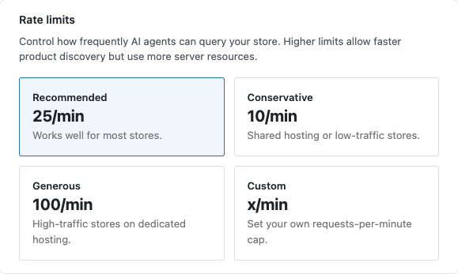
The Discovery tab's AI shopping-API activity card shows what AI agents are actually doing on your store. It counts catalog searches and lookups through the UCP shopping API; page, feed, and /llms.txt fetches aren't counted (most are served from cache and never reach your server). The plugin records this activity in a private log on your own server. Nothing leaves your site.
The period selector at the top (Day / Week / Month / Quarter) drives all three cards:
Data starts populating automatically once you enable the plugin. Detailed event logs are kept for 30 days; summary counts are kept for 90 days. Use this log to spot trends and problems, not as permanent storage.
Stats update hourly, so today's AI traffic appears in the dashboard within an hour of occurring.
The Policies tab publishes structured signals that AI agents read when deciding what to show shoppers: return terms, shipping timelines, and more. Two cards are currently available.
Your return policy publishes in two places: on each product page (so an AI agent recommending one of your products can mention the policy), AND on your homepage (so an agent that discovers your store before a specific product can learn the store-wide commitment up-front). Per-product overrides (see below) only affect the per-product copy.
When AI agents recommend your products, they often tell customers about your return window ("Free returns for 30 days"). This section controls what they say.
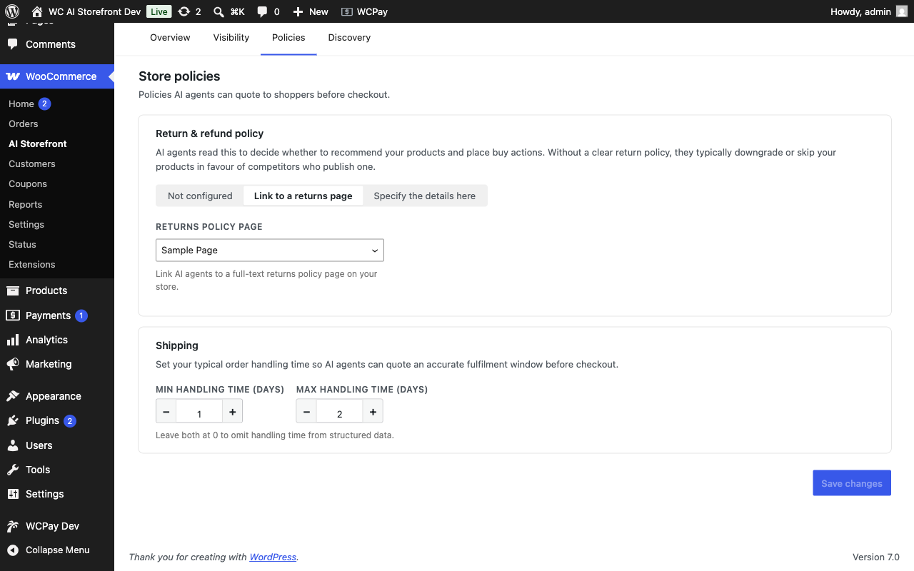
Three modes:
You can also link to an existing returns/refunds page from the dropdown. This is useful when the policy already lives on a customer-facing page. When you select a page, AI agents are handed a link to it instead of the individual terms (days, fees, methods). Search engines accept one or the other, not both, so the page link takes precedence.
Some merchants have a generally returnable catalog with specific final-sale items (clearance, custom, perishable). The AI: Final sale checkbox in the product editor's Inventory tab overrides the store-wide policy for that single product.
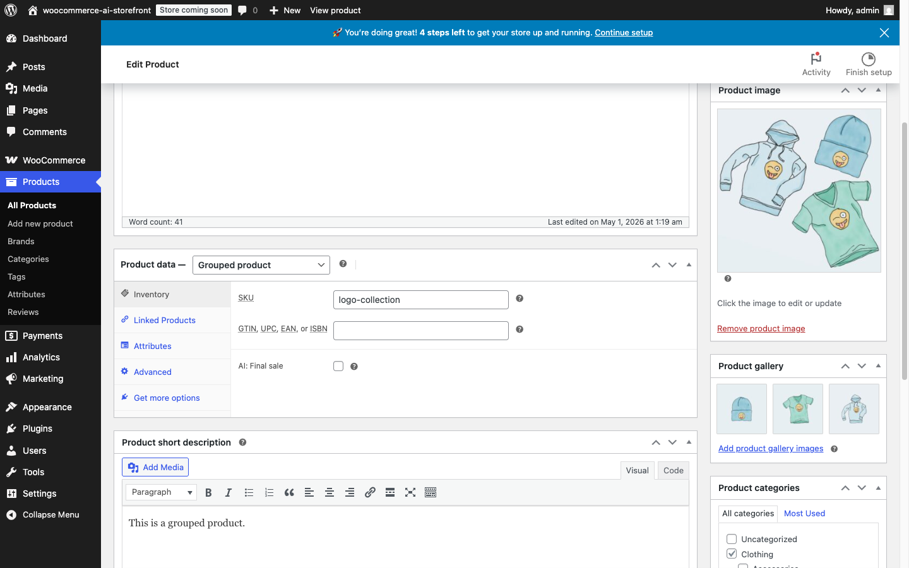
AI agents often tell shoppers "Ships in 1–2 business days" when recommending your products. This section lets you specify your actual handling time.
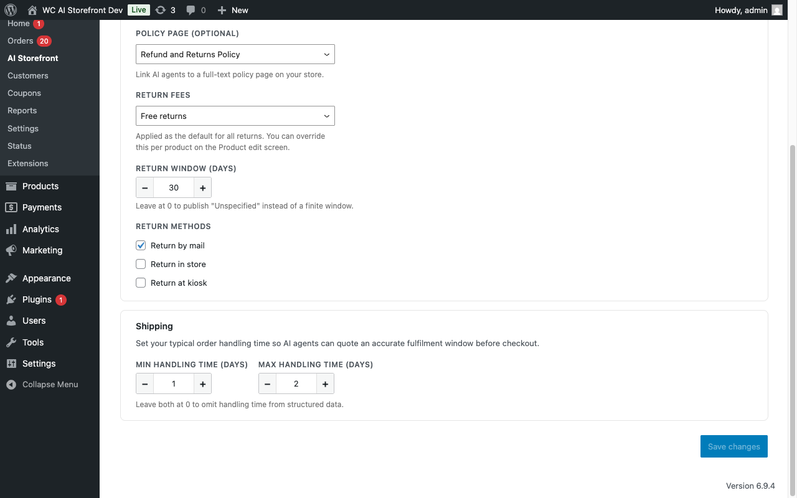
Set Minimum and Maximum business days using the number inputs. This is how long you need to pack and ship an order.
Note: Handling time is how long you need to pack and ship. Transit time (carrier and destination) is not included here.
When a shopper finds your store through an AI assistant and makes a purchase, WooCommerce automatically records:
The plugin tries to name the agent from the clearest signal first, falling back to weaker signals only when a stronger one is absent. When a request carries no explicit identity at all, the plugin reads the visitor's User-Agent header as a last step before recording the order as Unknown. Known answer agents are recognized this way and attributed by brand:
So an order that an earlier version would have shown as Unknown now shows the correct brand whenever one of these agents reaches your store. General-purpose search crawlers such as Bingbot, Googlebot, and Applebot are not treated as shopping agents and stay Unknown.
When the plugin names an agent from its User-Agent, it attributes that order to the same brand bucket as a self-declared visit (for example, both land under ChatGPT), and it keeps the raw signal it matched on the order. So an order attributed by User-Agent looks the same in your stats as one attributed any other way, and you can still tell the two apart by inspecting the order if you want to.
This affects attribution only. It does not change who can read your catalog, so a visitor that merely claims to be a known agent gains a brand label but no extra access.
The Discovery tab shows a reachability indicator in the card intro. The note "Reachability is checked from your browser" confirms the endpoints are accessible to AI agents.
WooCommerce Orders list. Open WooCommerce → Orders. The Origin column shows which AI agent sent the customer (ChatGPT, Gemini, etc.). Non-AI orders show Direct, Unknown, or the standard source.
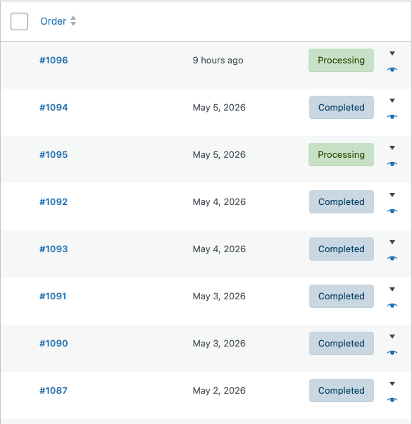
Overview tab. The stat cards aggregate AI orders, revenue, AOV, and top-agent share for the selected period.
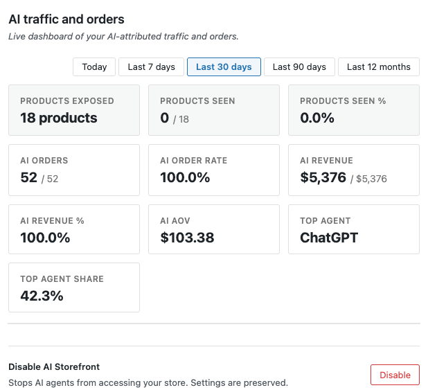
Recent AI Orders table (Overview tab). Shows your latest orders from AI referrals: order number, customer, date, status, items, which agent sent them, and total. Click an order number to see full details. Click a customer name to see all their orders. You can filter by agent or status, search, sort columns, and adjust the table view. Your table preferences are saved.
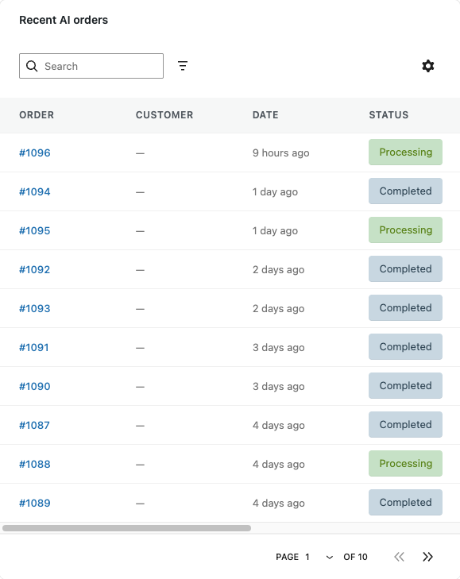
The plugin does not record:
If you want deeper multi-touch attribution, use an analytics tool that reads WooCommerce's order data.
Day-to-day maintenance is minimal.
Weekly (5 min). Glance at the Overview tab. Sudden drops in AI orders usually mean an agent revised its crawl policy or robots.txt changed. If one agent dominates, dig into how that agent surfaces your products.
Monthly (10 min). Re-verify the four endpoint URLs from section 4. Security plugins or CDN changes can sometimes block them. Review your visibility scope too.
After major changes. Re-verify endpoints after a WordPress core update, a WooCommerce major version update, switching themes, installing or updating a security plugin (some block /.well-known/ by default; allow-list /.well-known/ucp if so), or migrating hosts.
Plugin updates. AI Storefront updates often as the AI discovery protocol evolves. Check the CHANGELOG before updating. Version 0.x updates are backwards-compatible with your settings; a version 1.0 bump will include a migration guide.
/llms.txt (or /opensearch.xml) returns 404Permalinks need flushing. Go to Settings → Permalinks and click Save Changes (don't change anything, just save). Then reload the URL. If still 404, check the plugin is enabled (it must be active, not paused). Both endpoints are served by the same rewrite-rule mechanism, so the same fix applies to either.
/.well-known/ucp returns 404 but /llms.txt worksA security plugin is blocking /.well-known/. Add /.well-known/ucp to its allow list.
Your theme or page builder may be overriding WooCommerce's product details. Try switching to the Storefront theme temporarily to confirm. If that works, contact your theme developer or try a different theme.
Check these in order:
/llms.txt from a fresh browser session to confirm it's live./llms.txt doesn't list a sitemapIf your site only recently started publishing a sitemap (a fresh WordPress install, or you just enabled an SEO plugin that emits one), /llms.txt caches the "no sitemap found" result for 24 hours so it doesn't re-probe the same paths on every request. To force a refresh now, open WooCommerce → AI Storefront, change any setting and save (or save without changing anything on the Visibility / Discovery / Policies tab — the save itself busts the sitemap cache). The next /llms.txt fetch re-probes and picks up the sitemap.
Check:
If all are okay, AI traffic may still be building. AI agents cache your catalog, so it can take a week or more for real orders to appear.
A team member tested with a real AI assistant and clicked through. The attribution is correct: that order really was AI-referred. Use a dedicated test account or staff discounts when smoke-testing.
robots.txt looks empty after disablingThat's normal. The plugin removes its own instructions; what's left is just WordPress's standard settings (blocking the admin area).
docs/README.mddocs/engineering/SECURITY.md. Do not open a public issue for security reports.Covers AI Storefront 0.23.2. Screenshots are approximate; your store may look slightly different depending on theme and admin color scheme.